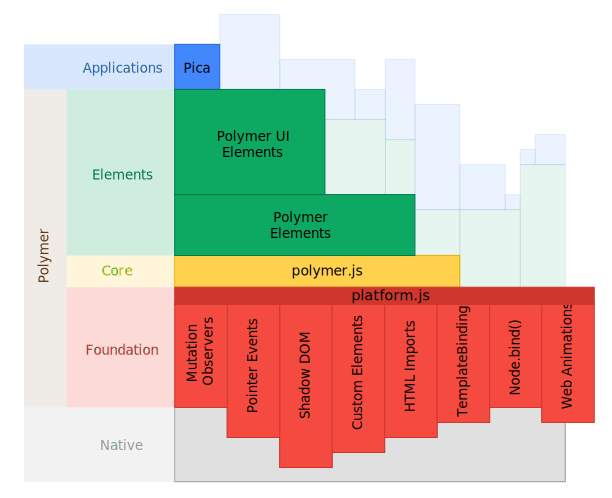

Polymer
by Google Developers
{{message}}
<x-code>
</x-code>
<hangout-chat from="Paul, Addy">
<hangout-discussion>
<hangout-message from="Paul" profile="profile.png">
<p>Feelin' this Web Components thing.</p>
<p>Heard of it?</p>
</hangout-message>
</hangout-discussion>
</hangout-chat>
<hangout-chat>...</hangout-chat>
- polymer-ui-accordion
- polymer-ui-menu
- polymer-ui-tabs
- polymer-ui-icon-button
- polymer-ui-sidebar
- polymer-ui-overlay
- polymer-flex-layout
- polymer-collapse
- polymer-animation
- polymer-ajax
- polymer-jsonp
- polymer-localstorage
- Extending Existing Views
- Change Watchers
- Public/Private Properties
- Switch between Shadow/Light DOM
- Element Lifecycle Events
- Data-binding Expressions
- Nested Template Scoping
My name is Bill
var NameTag = document.register('name-tag', {
prototype: Object.create(HTMLHeadingElement.prototype)
}););
var nameTag = new NameTag()
var input = document.getElementById('userName')
nameTag.bind('value', nameTag, 'name');

implement any missing standardised features.
It's definitely happening.
implement any missing "probably going to be standardised" features to browsers.
"It might happen, we've suggested it be standardised. Here's a working implementation to play with."
Others can build on top of the work going into Polymer
e.g. FirefoxOS uses polymer's platform.js
i.e. browsers that auto-update
- Chrome
- Canary
- Chrome Android
- Firefox
- Safari 6+
- Mobile Safari
- Internet Explorer 10+